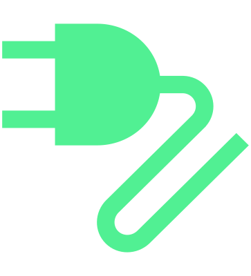

Possibilités de recharge avec courant alternatif (CA) :
Station de recharge (Wallbox)
Borne de recharge publique
Prises de courant
Avant de procéder à la recharge
Sécuriser le véhicule à l’aide du frein de stationnement.
Couper le contact.
Le fait de laisser le contact peut augmenter le temps de recharge.
Si le processus de recharge n'a pas lieu sur une station de recharge avec un câble de recharge intégré, raccorder le câble de recharge à la prise du chargeur ou à une prise secteur.
Dérouler complètement le câble de recharge.
Brancher le câble de recharge
Déverrouillez le véhicule et appuyez sur la trappe de charge de la batterie.
Ouvrir la trappe de recharge de la batterie.
L’indicateur du processus de recharge situé sur la prise de recharge clignote en vert.
Insérer la fiche du câble de charge dans la prise de charge.
Vérifier si la fiche de recharge est insérée droite et jusqu'à la butée dans la prise de recharge.
La prise de charge femelle est automatiquement verrouillée dans la prise de charge mâle. L’indicateur du processus de recharge situé sur la prise de recharge clignote en blanc.
Démarrer la recharge
La recharge commence automatiquement après le branchement du câble de recharge.
ou :
Si nécessaire, démarrer le processus de recharge sur la station de recharge.
L’indicateur du processus de recharge situé sur la prise de recharge clignote rapidement en vert. Le temps de recharge restant s’affiche à l’écran du combiné d’instruments et clignote 
Interrompre le processus de recharge et recommencer
Appuyer sur le bouton de fonction pour terminer immédiatement le processus de recharge dans le menu de réglage du processus de recharge dans l’infodivertissement Régler le processus de recharge.
Le processus de recharge est interrompu. La fiche de recharge reste verrouillée dans la prise de recharge.
Pour redémarrer le processus de recharge, appuyer sur le bouton de fonction pour démarrer immédiatement le processus de recharge dans l’infodivertissement Régler le processus de recharge.
Fin automatique du processus de recharge et déverrouillage de la fiche de recharge
Une fois la limite supérieure de la batterie atteinte, le processus de recharge s’arrête automatiquement.
En cas de réglage du déverrouillage automatique de la fiche de recharge, le déverrouillage s’effectue à la fin du processus de recharge et la fiche reste ensuite déverrouillée Régler le processus de recharge.
Si la fiche de recharge n’est pas déverrouillée, cela est dû au fait que les appareils allumés sont alimentés en courant, par exemple le climatiseur, lorsque le contact est mis.
Pour déverrouiller la fiche de recharge verrouillée, appuyer sur la touche  de la clé.
de la clé.
Arrêt manuel du processus de charge
Appuyer sur la touche
 de la clé ou sur la touche de verrouillage centralisé
de la clé ou sur la touche de verrouillage centralisé  qui se trouve sur la console centrale.
qui se trouve sur la console centrale.Le processus de recharge est interrompu, la fiche de recharge est déverrouillée pendant 45 s et peut être retirée.
La fiche de recharge est à nouveau verrouillée après 45 s environ. Si la limite supérieure de charge de la batterie n'a pas été atteinte, la charge se poursuit.

ou :
Suivre les instructions de la borne de recharge.
La fiche de recharge reste verrouillée dans la prise de recharge et doit être déverrouillée par appui sur la touche
 de la clé ou sur la touche de verrouillage centralisé
de la clé ou sur la touche de verrouillage centralisé  dans la console centrale.
dans la console centrale.
Après la recharge
Si la fiche de recharge reste verrouillée dans la prise de charge, elle peut être déverrouillée avec le bouton
 sur la clé.
sur la clé.Débrancher la fiche de recharge de la prise de recharge.
Fermer la trappe de recharge de la batterie.
Si nécessaire, débrancher le câble de recharge du chargeur ou de la prise secteur.

Si le câble de recharge reste branché au réseau électrique après une recharge, la batterie haute tension ne sera pas déchargée par les consommateurs électriques du véhicule. Ces consommateurs sont alimentés par le réseau électrique.